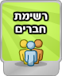
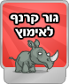

|  |
רשימת חברים – אקולוקו מלאה בחברים וחברויות. תארו לכם שבלחיצת כפתור תוכלו להציע חברות לאקואים באקולוקו, לשלוח להם הודעות, לראות מתי הם נכנסים לאקולוקו, באיזה שרת הם, ובאיזה מסך. אהבתם? ידענו. באמת שידענו. |
|  |
גור קרנף – אנחנו יודעים שאתם מאד אוהבים להציל גורי חיות שהופרדו מהוריהם. מה דעתכם להציל גור של קרנף בסכנת הכחדה? |
|
המירוץ לטבע - משחק חדש ומהמם שמשלב כיף עם פיזיקה ושמירה על הסביבה. אסטרטגיה נכונה וביצועים מהירים יבטיחו שבמירוץ הזה תגיעו ראשונים לפרסים הנדירים!! |
|
|